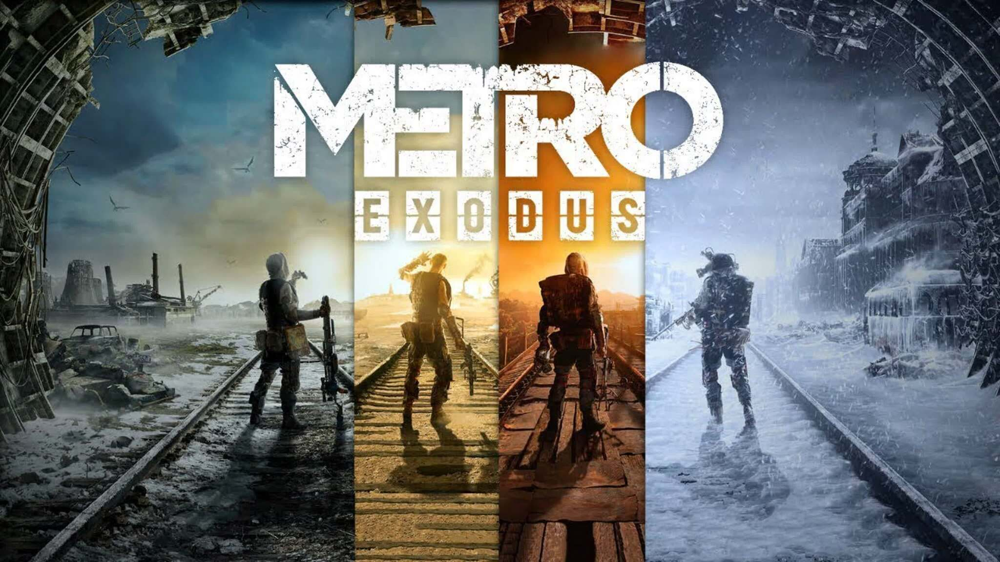

Metro Exodus (укр. Метро: Вихід) — відеогра, шутер від першої особи, розроблена українсько-мальтійською компанією 4A Games й видана Deep Silver 15 лютого 2019 року на Microsoft Windows, PlayStation 4 і Xbox One. Metro Exodus є третьою грою у «Всесвіті Метро 2033», сюжет якого заснований на романах Дмитра Глуховського і продовжує історію Metro 2033 та Metro: Last Light. Гра продовжує історію позитивної кінцівки Metro: Last Light, прийняту за канон. Головний герой — Артем із групою вцілілих рейнджерів ордена «Спарта» розкривають, що поза Москвою також є вцілілі після війни. Вони покидають столицю на паротязі «Аврора» та їдуть далеко на схід шукати нове місце. Історія починається з суворої ядерної зими й відбувається протягом одного року. Інший персонаж гри, який повернувся з попередніх ігор і книги «Метро 2035», — Анна, яка тепер є дружиною Артема. 26 березня 2019 року разом із оновленням, розробники також випустили повну українську локалізацію. Станом на травень 2023 року було продано понад 8,5 мільйонів копій гри по всьому світу.
